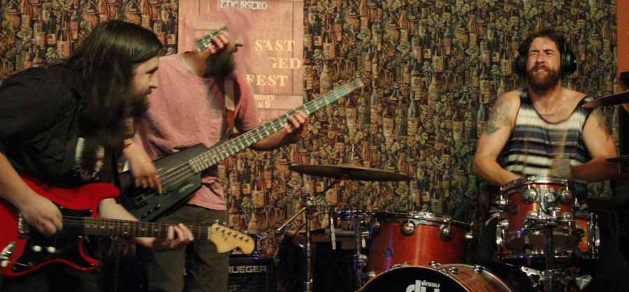
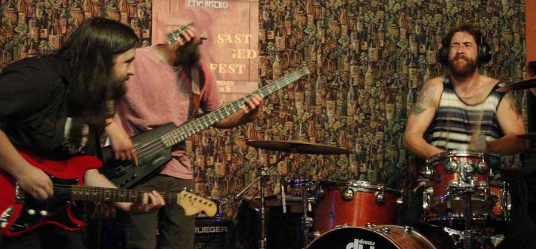

about us
 

The Invisible Sundial is a genre-fusing, instrumental solo project based off one bold premise: not everything which creates sound has to be a traditional instrument. The brainchild of multi-instrumentalist Austin Amberg, The Invisible Sundial uses the whole spectrum of synthesis, exploring every angle to create bite-size tasters of sound - inviting the listener in for more. The Invisible Sundial aims to get the absolute most from their tools. With influences from prog-rock, synth-pop, shoegaze, electronica, post rock, and more, The Invisible Sundial doesn’t sit squarely in one place – yet in doing so, manages to range to the lesser-explored regions of The Invisible Sundial’s influences, turning them into something new.